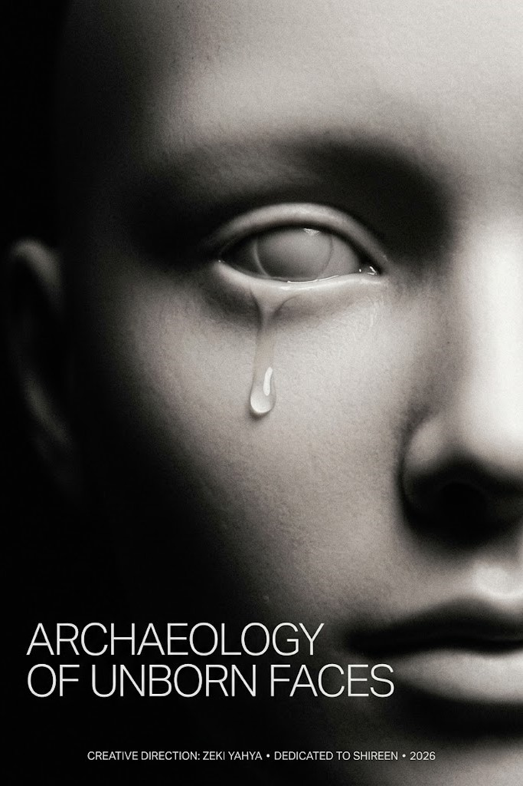
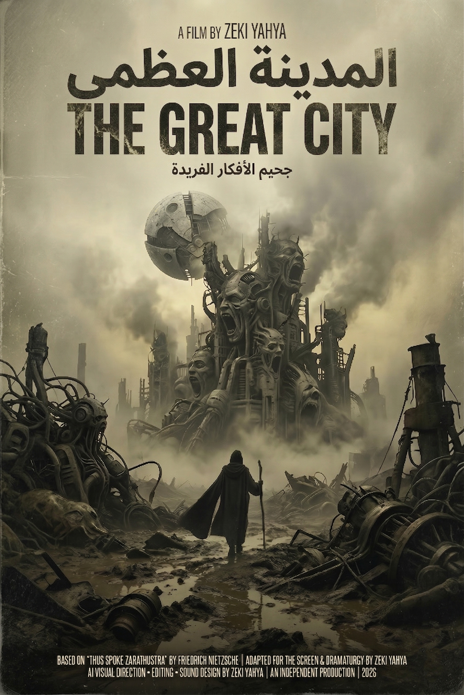
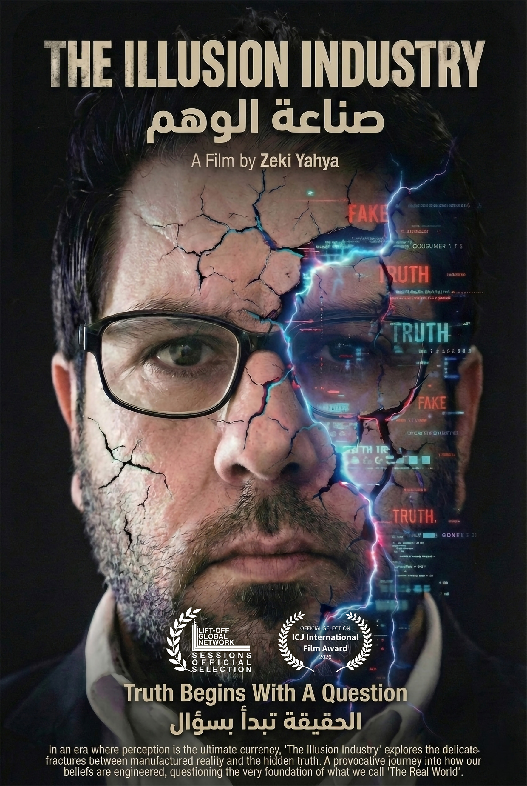

ZEKI YAHYA
Reżyser filmów eksperymentalnych, scenarzysta i dyrektor kreatywny.
Skupiony na kinie filozoficznym, dystopijnym i awangardowym.
FILMOWE WYKOPALISKA: MANIFEST REŻYSERA
Kino nie jest dla mnie jedynie środkiem opowiadania historii; to akt duchowych i filozoficznych wykopalisk. To dążenie do wizualizacji tego, co nieujawnione, chwytanie cichych zmagań egzystencji, zanim przybiorą kształt.
Moje filmowe poszukiwania są głęboko zakorzenione w poszukiwaniu ontologii prawdy. Czerpiąc z głębokiego egzystencjalnego ciężaru filozofii Nietzschego oraz medytacyjnej, melancholijnej ciszy tradycji Tarkowskiego, traktuję ekran nie jako płótno, lecz jako lustro odbijające ruiny współczesnej duszy.
W mojej nieustannej podróży — od analizy mechaniki rzeczywistości w "The Illusion Industry" po eksplorację postindustrialnej alienacji w "The Great City" — zawsze starałem się przesuwać granice wizualnego wyrazu. Dziś stoimy na skraju nowej granicy: syntetycznego obrazu.
W moim najnowszym dziele, "Archaeology of Unborn Faces", zanurzam się w «przestrzeń utajoną» sztucznej inteligencji. Nie traktuję algorytmów tylko jako narzędzi, ale jako «cyfrowy czyściec», w którym wspomnienia, które nigdy nie istniały, i tożsamości, które jeszcze się nie narodziły, toczą bolesną walkę o manifestację. Przez mroczny, monochromatyczny obiektyw i surową siłę niemego kina, staram się odkopać te nienarodzone twarze, pytając, co to znaczy być człowiekiem w epoce, w której maszyny mogą śnić o ludzkim smutku.
Robię filmy, aby dokumentować cichy upadek i nieme zmartwychwstania ludzkiego ducha. Moja praca to zaproszenie do spojrzenia w otchłań, nie ze strachem, ale z głębokim pragnieniem zrozumienia architektury naszych własnych iluzji.

CASE 0: TOMORROW (2026)
Filmowy pościg za czasem. Wychodząc poza konwencjonalną narrację, projekt ten materializuje biurokratyczne odroczenie egzystencji — wizualny przekład kafkowskiego koszmaru i nietzscheańskiego niepokoju współczesnej duszy przemysłowej. Pozbawiając opowieść dialogów i muzycznego ukojenia, widz jest zmuszony fizycznie znosić erozję oczekiwania, przekształcając ekran w egzystencjalny czyściec.

ARCHAEOLOGY OF UNBORN FACES (2026)
Głębokie filmowe wykopaliska w «przestrzeni utajonej» AI. Wykraczając poza krytykę cyfrowego oszustwa, projekt ten bada samą ontologię syntetycznego istnienia. Przyjmując filozofię rzeźbienia w czasie Tarkowskiego, boleśnie powolne ujęcia i ciężka cisza zmuszają widza do znoszenia fizycznego ciężaru czasu wewnątrz maszyny, która nie rozumie śmiertelności. Pojawiające się nieskazitelne twarze nie są odbiciem rzeczywistości, lecz baudrillardowską «hiperrzeczywistością» ukrywającą brak pochodzenia.

THE GREAT CITY (2026)
Zainspirowany filozoficznym arcydziełem Friedricha Nietzschego "Tako rzecze Zaratustra", ten awangardowy projekt służy jako mroczne, filmowe lustro współczesnej metropolii. Wizualnie analizuje przerażającą przepowiednię «Ostatniego Człowieka» — ostatecznego przejawu duchowego nihilizmu i kulturowej dekadencji we współczesnym tłumie. Przez bezkompromisowy eksperymentalny pryzmat, film obdziera romantyzm miejskiego postępu, aby obnażyć pustą istotę społeczeństwa uwięzionego w mechanicznej powtarzalności.

THE ILLUSION INDUSTRY (2026)
Intensywna krytyka filmowa hiperrzeczywistości i cyfrowego oszustwa. Projekt ten bada zatarte granice między autentyczną ludzką egzystencją a symulowanymi rzeczywistościami, kwestionując sfabrykowane narracje dominujące w naszej kulturze wizualnej. Pozbawiony powierzchownych konwencji filmowych, film rzuca widzowi wyzwanie do analizy ontologii obrazu i systematycznej produkcji iluzji we współczesnym świecie.